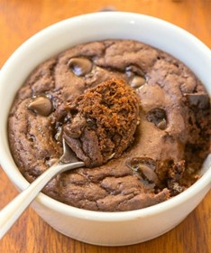

Bacon and Avocado Frittata
Ingredients
- 8 bacon medallions
- 3 tbsp olive oil
- 6 eggs
- 1 large avocado
- 2 tsp red wine vinegar
- 1 ½ tsp dijon mustard
- 1 small red chilli
- 200g mixed salad leaves
- 12 baby plum tomatoes
Nutrition
- (Serves 4)
- Per serving:
- Calories: 467
- Fat: 38g
- Carbs: 7g
- Protein: 22g
Instructions
- Fry rashers on high heat until crispy. Roughly chop and set aside.
- Warm 1 tbsp oil in the pan. Beat the eggs and then mix in the rashers and season with salt and pepper. Pour the mixture into the pan.
- Cook on a low heat for 8 minutes until almost set.
- Add the avocado, cut into slices.
- Grill for 4 minutes.
- Mix the remaining oil, finely chopped chilli, vinegar and mustard in a large bowl. Toss in the salad leaves and the tomatoes cut into halves.
- Cut the frittata into wedges and serve along with the salad.
Loaded Cauliflower
Ingredients
- 500g cauliflower
- 100g sour cream
- 2 rashers
- 3 tbsp butter
- ¼ teaspoon garlic powder
- 80g cheddar cheese
- 2 tbsp chives
Nutrition
- (Serves 4)
- Per serving:
- Calories: 289
- Fat: 24.1g
- Carbs: 7.1g
- Protein: 11.4g
Instructions
-
Fry rashers on high heat until crispy. Roughly chop and set aside.
-
Chop cauliflower and add to a microwave safe bowl with 2 tbsp water.
-
Cover with cling film and microwave for 5-8 minutes until cooked through.
-
Drain excess water and let cool for a few minutes.
-
Add cauliflower to a food processor and blend until fluffy.
-
Add butter, sour cream and garlic powder and blend until smooth.
-
Add cauliflower mixture to bowl and combine with the chives and half of the cheese and season with salt and pepper.
-
Top the loaded cauliflower with the remaining cheese and the rashers and microwave for a couple minutes until the cheese is melted.
Keto “Oats”
Ingredients
- 2 tbsp chia seeds
- 2 tbsp ground flaxseed
- 2 tbsp shredded coconut
- 2 tbsp sweetener of choice
- 120 ml unsweetened coconut milk
Nutrition
- (Serves 1)
- Per serving:
- Calories: 250
- Fat: 17g
- Carbs: 16g
- Protein: 18g
Instructions
-
Mix all dry ingredients together in a small mixing bowl.
-
Combine all ingredients in a mixing bowl.
-
Transfer to small, ovenproof dish.
-
Then add in the coconut milk to make it creamy “oatmeal” texture.
-
Serve with your favourite toppings and enjoy!
Protein Mug Brownie
Ingredients
- 1 scoop chocolate protein powder
- 1 large egg
- 1 tbsp coconut flour
- 2 tbsp sweetener of choice
- ½ teaspoon baking powder
- 1.5 tbsp cocoa powder
- ¼ cup skim milk
- 1 tbsp chocolate chips
Nutrition
- (Serves 2)
- Per serving:
- Calories: 190
- Fat: 5.9g
- Carbs: 14.9g
- Protein: 18.4g
Instructions
-
Combine all dry ingredients in a mixing bowl.
-
Fry mince over medium heat for 5 minutes, until golden brown. Finely chop the onions and celery.
-
In a separate bowl, whisk together the egg and the milk.
-
Add to the dry mixture and mix until a smooth batter is formed.
-
Stir in the chocolate chips.
-
Microwave for 30 seconds.
-
Enjoy!

Keto Brownie
Ingredients
- 170g butter
- 85g keto chocolate chips
- 60g almond flour
- 25g cocoa powder
- 3 large eggs
- 150g granulated sweetener of choice
- ½ teaspoon baking powder
Nutrition
- (Serves 12)
- Per serving:
- Calories: 180
- Fat: 17g
- Carbs: 5g
- Protein: 3g
Instructions
-
Preheat oven to 180 degrees Celsius.
-
Line 8x8 inch pan with greaseproof paper.
-
Combine all dry ingredients together in a large mixing bowl.
-
Melt butter and half the chocolate over a medium heat until fully melted.
-
In a separate bowl, whisk the eggs until frothy.
-
Gradually add in the chocolate mixture to the eggs, continuously stirring until fully combined.
-
Mix in the dry ingredients a little at a time. Fold the remaining chocolate chips into the brownie batter.
-
Transfer into the pan.
-
Bake for about 15 minutes until cooked through.
-
Allow to cool for 20 minutes before cutting into 12 brownies.
Keto Carrot Cake Bars
Ingredients
- 1 tbsp ground cinnamon
- 1 teaspoon vanilla extract
- 125 ml milk of choice
- 1 tsp salt
- 50g granulated sweetener of choice
- 120g almond butter
- 60ml sugar free syrup
- 2 tbsp grated carrots
- 60 ml pumpkin puree
- 110g coconut flour
For icing:
- 250g cream cheese
- 1 tsp cinnamon
- 2 tbsp granulated sweetener of choice
Nutrition
- (Serves 9)
- Per serving:
- Calories: 235
- Fat: 12g
- Carbs: 12g
- Protein: 10g
Instructions
-
Line an 8x8 inch baking pan with greaseproof paper.
-
Combine the flour, protein powder, salt, sweetener and cinnamon in a large mixing bowl.
-
Mix in the grated carrots and pumpkin puree.
-
Melt almond butter and syrup over a medium heat until melted. Whisk in the vanilla extract.
-
Pour into dry ingredients, along with the milk and mix until fully combined.
-
Transfer into baking pan and spread out evenly.
-
Refrigerate for 10 minutes.
-
Combine all ingredients for icing in a mixing bowl and mix until smooth.
-
Take bars out of fridge and spread icing over the top.
-
Place bake in the fridge for at least 30 minutes.
-
Once set cut into 9, evenly sized pieces.

Szechuan Chicken
Ingredients
- 225g chicken breast
- 1 tbsp vegetable oil
- 50g chopped onion
- ½ tsp sugar
- ½ tsp ground Szechuan pepper
- 20g corn starch
- 2 ½ tbsp soy sauce
- 1 crushed garlic clove
- 1 tbsp balsamic vinegar
Nutrition
- (Serves 2)
- Per serving:
- Calories: 224
- Fat: 7g
- Carbs: 14g
- Protein: 25g
Instructions
-
Dice chicken into pieces and toss in large bowl with the corn-starch.
-
Heat oil in a pan over a medium heat. Add in garlic and chicken and cook until lightly browned
-
Add soy sauce, sugar and vinegar as well as 2 tbsp of water. Cover and cook for 2 minutes.
-
Add in the pepper and onions and cook for a further 2 minutes.
-
Serve immediately.
Keto Fishcakes
Ingredients
- 450g cod
- 35g coconut flour
- 2 tbsp olive oil
- 2 eggs
- Handful parsley, chopped
- 1 red onion, finely chopped
- 1 tsp paprika
- ½ tsp cayenne pepper
- ½ tsp salt
- ½ tsp black pepper
Nutrition
- (Serves 6)
- Per serving:
- Calories: 153
- Fat: 7g
- Carbs: 5g
- Protein: 16g
Instructions
-
Season cod with salt and pepper.
-
Fry fish with a little oil, over a medium heat for 10 minutes.
-
After cooked, use a fork to break cod up into small pieces.
-
Add in the parsley, onions, flour and eggs along with the spices.
-
Coarsely blend mixture in a food processor.
-
Compress mixture into fishcakes.
-
With the remaining oil, fry fish cakes over a medium heat for about 3 minutes on each side.
-
Serve with a side salad.
New around here? Sign up